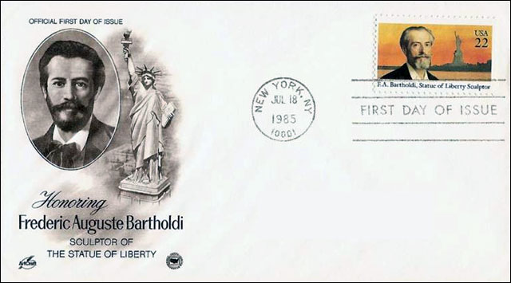
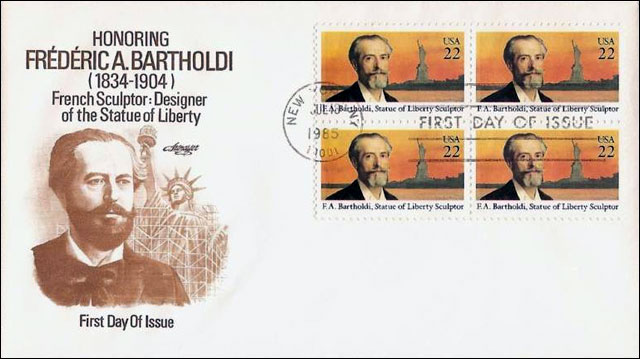
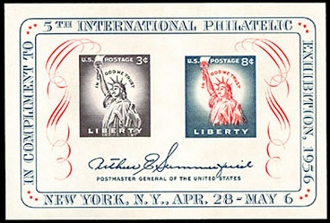
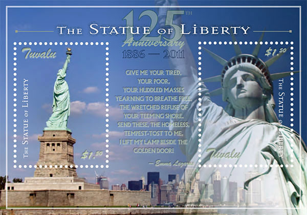

The
United States Declaration of Independence is a statement adopted by the
Continental Congress on July 4, 1776, which announced that the thirteen
American colonies then at war with Great Britain were now independent states,
and thus no longer a part of the British Empire. ... Its stature grew over
the years, particularly the second sentence, a sweeping statement of individual
human rights:
"We hold these truths to be self-evident, that all men are created
equal, that they are endowed by their Creator with certain unalienable Rights,
that among these are Life, Liberty and the pursuit of Happiness." Source
The
Statue of Liberty (Liberty Enlightening the World, French: La Liberté
éclairant le monde) is a colossal neoclassical sculpture on Liberty
Island in New York Harbor, designed by Frédéric Bartholdi
and dedicated on October 28, 1886.
Frédéric
Auguste Bartholdi (2 August 1834, Colmar, Haut-Rhin – 4 October
1904) was a French sculptor who is best known for designing the Statue of
Liberty.
The
plan of Bartholdi having been approved, more than 1,000,000 francs were
raised by subscription throughout France for the building of the statue.
In 1879, Bartholdi was awarded design patent U.S. Patent D11,023 for the
Statue of Liberty. ... Before starting his commission, Bartholdi had traveled
to the United States and personally selected New York Harbor as the site
for the statue.

The
United States set apart Bedlow's Island as a site for the monument, and
funds were collected throughout the United States for the building of the
pedestal, about $300,000 being raised. In October 1886, the structure was
presented to the nation as the joint gift of the French and American people.

The
statue is 151 feet and 1 inch high, and the top of the torch is at an elevation
of 305 feet 11 inches from mean low-water mark. It was the largest work
of its kind that had ever been completed up to that time. Source
The
statue, a gift to the United States from the people of France, is of a robed
female figure representing Libertas, the Roman goddess of freedom, who bears
a torch and a tabula ansata (a tablet evoking the law) upon which is inscribed
the date of the American Declaration of Independence.
A broken
chain lies at her feet. The statue has become an iconic symbol of freedom
and of the United States. ... A ceremony of dedication was held on the afternoon
of October 28, 1886. President Grover Cleveland, the former New York governor,
presided over the event.[88] On the morning of the dedication, a parade
was held in New York City; estimates of the number of people who watched
it ranged from several hundred thousand to a million.

The
statue rapidly became a landmark. Many immigrants who entered through New
York saw it as a welcoming sight. Oral histories of immigrants record their
feelings of exhilaration on first viewing the Statue of Liberty. ... In
1924,
President
Calvin Coolidge used his authority under the Antiquities Act to declare
the statue a national monument.
There
are several plaques and dedicatory tablets on or near the Statue of Liberty.
A plaque on the copper just under the figure's feet declares that it is
a colossal statue representing Liberty, designed by Bartholdi and built
by the Paris firm of Gaget, Gauthier et Cie (Cie is the French abbreviation
analogous to Co.). A presentation tablet, also bearing Bartholdi's name,
declares the statue to be a gift from the people of the Republic of France
that honors "the Alliance of the two Nations in achieving the Independence
of the United States of America and attests their abiding friendship. Source
